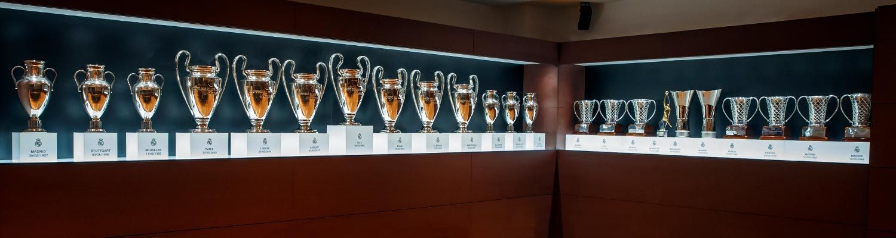

Domestic Titles
Real Madrid have won La Liga 34 times since the club was founded. They are the team that has won the La Liga title the most of all the Spanish teams. Last year (2019-20) they managed to win it over Barcelona by beating them by 2 points. They have also managed to win Copa Del Rey 19 times which puts them on 3rd place of most Copa Del Rey titles. Real Madrid have also won Supercopa De Espana 11 times and only one time Copa Eva Duarte, and Copa de la Liga.
| Competition | Titles(No.) | Seasons |
|---|---|---|
| La Liga | 34 | 1931–32, 1932–33, 1953–54, 1954–55, 1956–57, 1957–58, 1960–61, 1961–62, 1962–63, 1963–64, 1964–65, 1966–67, 1967–68, 1968–69, 1971–72, 1974–75, 1975–76, 1977–78, 1978–79, 1979–80, 1985–86, 1986–87, 1987–88, 1988–89, 1989–90, 1994–95, 1996–97, 2000–01, 2002–03, 2006–07, 2007–08, 2011–12, 2016–17, 2019–20 |
| Copa del Rey | 19 |
1905, 1906, 1907, 1908, 1917, 1934, 1936, 1946, 1947, 1961–62, 1969–70, 1973–74, 1974–75, 1979–80, 1981–82, 1988–89, 1992–93, 2010–11, 2013–14 |
| Supercopa de Espana | 11 |
1988, 1989, 1990, 1993, 1997, 2001, 2003, 2008, 2012, 2017, 2019–20 |
| Copa Eva Duarte | 1 | 1947 |
| Copa de la Liga | 1 | 1985 |

Continent Titles
Real Madrid is the team that has won the most prestigious competition in the history of football, the Champions League.They have won it 13 times which is almost twice more as the team that is in second place. They have also won the second biggesttournament on the continent which is the Europa League or as it is also known as the UEFA Cup. They have only won it twice. The white giants have also managed to win the EUFA Super cup 4 times. The winner of this cup is decided between the winner of the Champions League and the winner of the Europa League, the two teams then have a match to see who will be crowned as the champion of the continent.
| Competition | Titles(No.) | Seasons |
|---|---|---|
| UEFA Champions League | 13 |
1955–56, 1956–57, 1957–58, 1958–59, 1959–60, 1965–66, 1997–98, 1999–2000, 2001–02, 2013–14, 2015–16, 2016–17, 2017–18 |
| UEFA Europa League (UEFA Cup) |
2 | 1984-85, 1985-86 |
| UEFA Super Cup | 4 | 2002, 2014, 2016, 2017 |
|  | ||
Worldwide Trophies
Real Madrid have left their mark on the Wordlwide scene as well. They have won the Intercontinental Cup 3 times over the years which puts them in first place together with the Uruguayan side Penarol. Real Madrid have managed to win the FIFA Club World Cup 4 times which makes another great achievement that puts them on top of the leader board of all time FIFA Club World Cup winners.
| Competition | Titles(No.) | Seasons |
|---|---|---|
| Intercontinental Cup | 3 | 1960, 1998, 2002 |
| FIFA Club World Cup | 4 | 1984-85, 1985-86 |